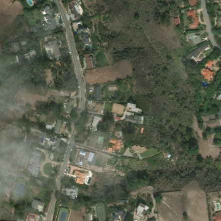
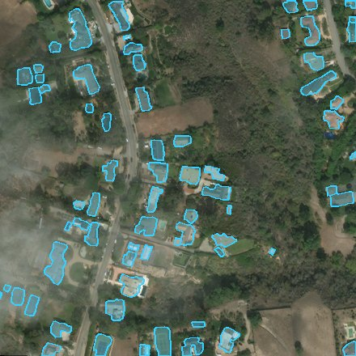
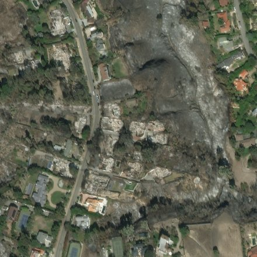
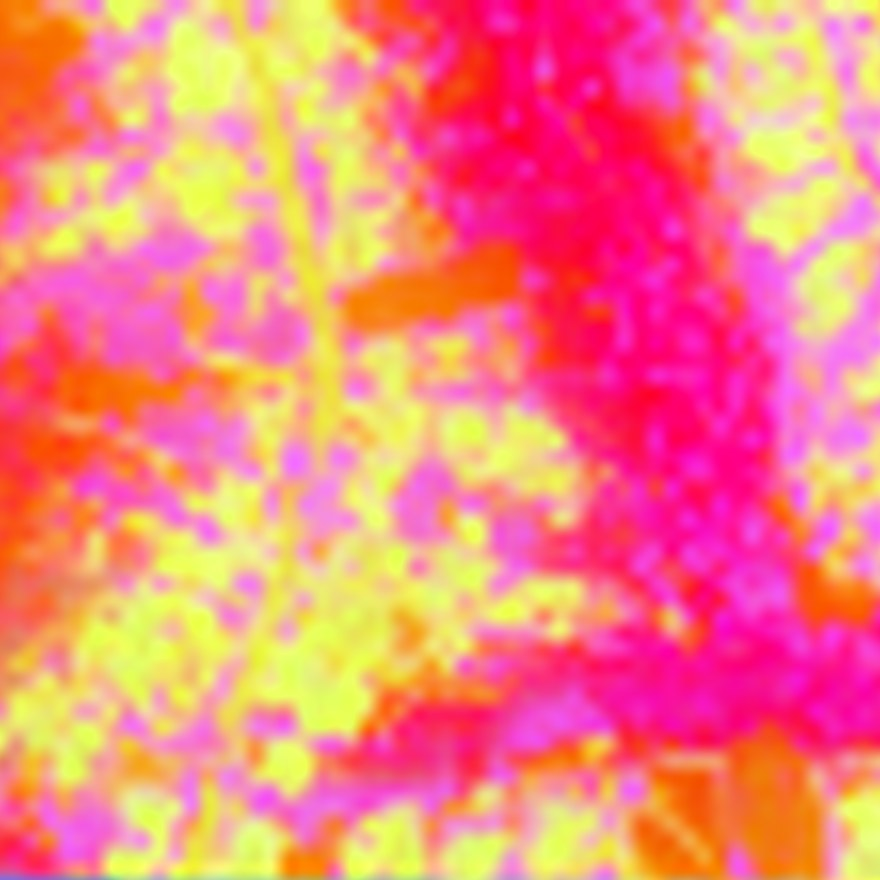
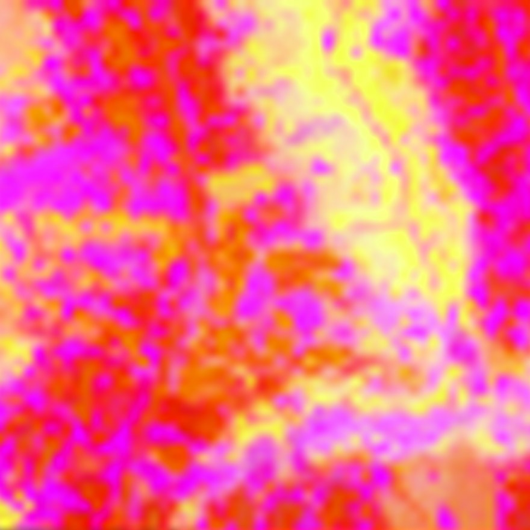
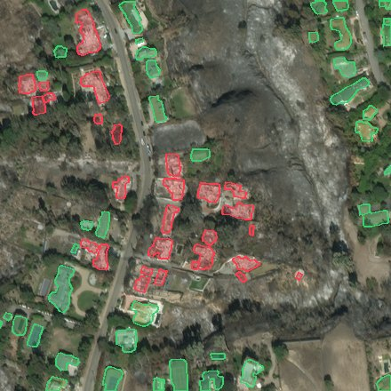

Stage A finds building footprints on the pre-event image, or takes them from an existing building map. Stage B runs when the post-disaster image arrives: one satellite-pretrained vision transformer encodes both dates, a scene context is kept per date, features are collected for every footprint, and a small head classifies the damage.

COCO-pretrained, fine-tuned on xBD footprints · 512 px tiles enlarged 2× · keep score ≥ 0.5
Loss: objectness (binary cross-entropy) + proposal box (smooth L1) + building vs. background (cross-entropy) + box refinement (smooth L1) + mask (per-pixel binary cross-entropy), summed with equal weights.


Satellite-pretrained (SAT-493M) · 303M parameters · 24 transformer blocks, 1024-d, 16 heads, rotary positions · 50M parameters fine-tuned


RoIAlign pools a 3 × 3 grid of patch features inside each footprint's box, on the pre and the post embedding; each building also gets its scene's two context vectors.
Each vector is projected to 128-d (shared weights per type). The classifier sees the building and its scene after the event, and how each changed:
Loss: cross-entropy over the 4 damage classes, unweighted (the same for the frozen-encoder models).
